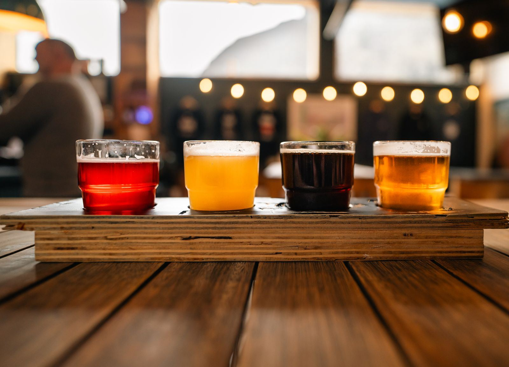

Going to a show at the Westcott Theater? Make Taps part of the plan. It is right in the neighborhood, open from 5:00 PM, and built for the before and after.
Taps opens at 5:00 PM daily. Settle in with a craft pour and a bowl of popcorn.
A pint or a cocktail with friends, then an easy walk to the theater.
Come back after the encore for a nightcap. Open until 11:00 PM daily.

Not sure which tap to commit to? A flight lets you taste across the lineup before the show starts.